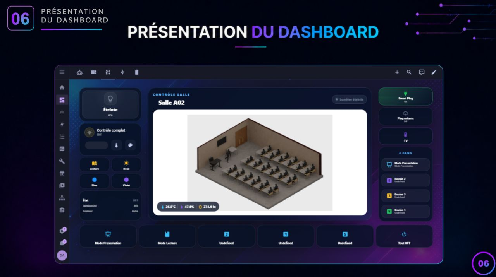
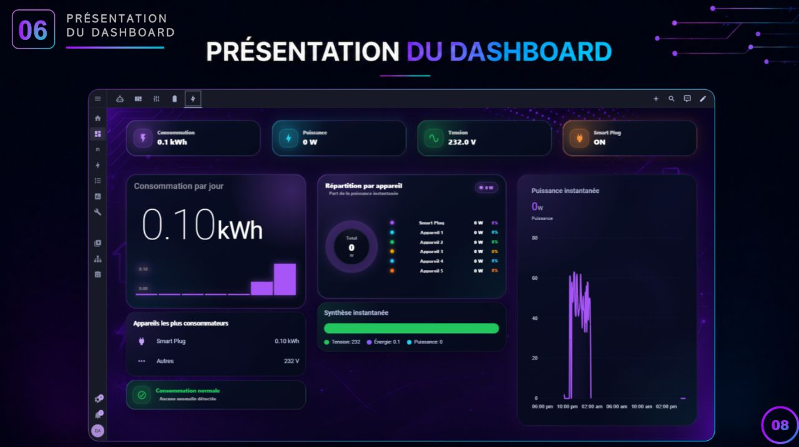
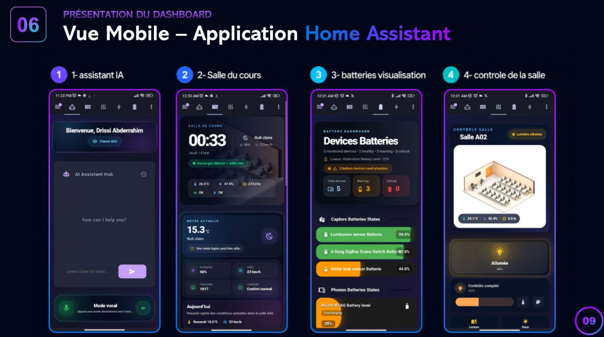

Salle de classe intelligente avec Home Assistant
Solution Home Assistant et Node-RED développée en équipe pour suivre les conditions intérieures, évaluer le confort thermique et automatiser la gestion énergétique d’une salle de classe universitaire.

Tableau de bord Home Assistant développé par notre équipe : visualisation de la salle, données des capteurs et interfaces de contrôle.
Le contexte
Dans le cadre du Master Green Building Engineering and Energy Efficiency (Green BEEE) à l’UM6P, nous avons développé une solution d’automatisation pour une salle de classe universitaire. Mené en équipe avec l’accompagnement de notre professeur, le projet associe objets connectés, analyse des données et interfaces de suivi.
L’objectif
Exploiter les données des capteurs pour améliorer la gestion énergétique et le confort de la salle, en rendant les équipements et les interfaces plus réactifs aux besoins des occupants.
Mon rôle
Contribution, au sein de l’équipe, à la conception de la solution connectée et à l’intégration du suivi des conditions intérieures.
Le travail mené
- Intégration des données de température, d’humidité et de luminosité dans Home Assistant.
- Mise en place de scénarios d’automatisation avec Node-RED et d’une évaluation du confort thermique par les indices PMV/PPD.
- Développement de tableaux de bord, intégration d’un assistant IA Google conversationnel et supervision de la machine hôte.
De la mesure à la gestion intelligente
Capteurs et conditions intérieures
Collecte et visualisation des données de température, d’humidité et de luminosité pour suivre l’ambiance de la salle.
Confort thermique en temps réel
Évaluation du confort à l’aide des indices PMV/PPD, intégrée aux scénarios de traitement des données et d’automatisation.
Suivi énergétique et automatisations
Interfaces de suivi de la consommation d’énergie en temps réel et scénarios permettant d’adapter le fonctionnement de la salle aux besoins de ses occupants.
Interaction avec un assistant IA Google
Intégration d’un assistant conversationnel pour faciliter l’interaction avec le système et rendre les informations plus accessibles.
Supervision de la machine hôte
Surveillance des performances de la machine exécutant Home Assistant et Node-RED pour suivre le fonctionnement de l’ensemble du système.
Ce que ce travail apporte
Ce projet a renforcé mes compétences en automatisation des bâtiments, en IoT, en gestion intelligente de l’énergie et en analyse du confort thermique. Le travail collectif a également confirmé mon intérêt pour des bâtiments intelligents, sobres en énergie et centrés sur le bien-être de leurs occupants.
Interfaces de suivi et de contrôle

